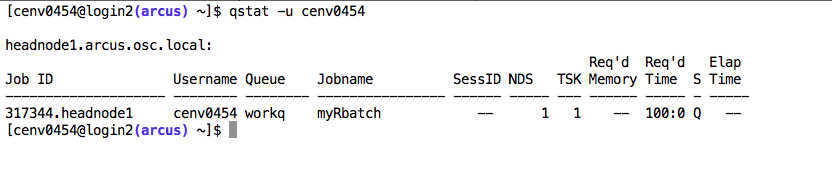

Sometimes we need to run R code on High Performance Computers.
For me, the case is the simulation of large ecological communities under different perturbation conditions.
**1)** we need get `Username` and `Password` from the technical support group of HPC.
And the technical group will give the addresses of HPC resources. In my case, one of the addresses is `arcus.oerc.ox.ac.uk`.
**2)** we could access HPC resources using `ssh` command:
```
ssh [Username]@arcus.oerc.ox.ac.uk
```
**3)** After we successfully log in, we need to use the computing power provided by HPC to complete some task or job.
While we can only use the computing power through by running some language code or applications.
The HPC of Oxford support the running of many languages and applications, including R.
If we want to use R on HPC, we have to first load R into our *context*. This is implemented by `module` command:
```
module load R
```
Certainly we can list all the languages and applications provided by HPC by command:
```
module avail
```
We can also list all the loaded applications or languages by command:
```
module list
```
**4)** After we load all needed applications, we need check the executability of our code under HPC environment.
For me, I need to check if the needed R packages exist. If not exist, I need to install them.
~~~~{r}
library(methods)
library(perturbEcol)
library(deSolve)
library(rootSolve)
library(plyr)
library(igraph)
~~~~
There is one question about the installation of R packages: The packages will be installed to the folder represented by a system environment variable `R_LIBS`, while we usually don't have writing privilege to such system folder. So we need add new local library path to install new packages:
~~~~{r}
.libPaths(c("/home/ouce-econetres/cenv0454/R", .libPaths()))
~~~~
where `/home/ouce-econetres/cenv0454/` is my home folder.
There is a problem when we install our package `perturbEcol` from `github` directly: we cannot clone the repository using below command:
~~~~
git clone https://github.com/keepsimpler/perturbEcol.git
~~~~
The local certificate cannot be established probably because of the security constraints or firewall configurations of HPC.
A simple (but not safe) method is to delete the `ssl` verification between HPC and `github` by below command:
~~~~
git config --global http.sslVerify false
~~~~


Sometimes we need to run R code on High Performance Computers.
For me, the case is the simulation of large ecological communities under different perturbation conditions.
1) we need get Username and Password from the technical support group of HPC.
And the technical group will give the addresses of HPC resources. In my case, one of the addresses is arcus.oerc.ox.ac.uk.
2) we could access HPC resources using ssh command:
ssh [Username]@arcus.oerc.ox.ac.uk
3) After we successfully log in, we need to use the computing power provided by HPC to complete some task or job.
While we can only use the computing power through by running some language code or applications.
The HPC of Oxford support the running of many languages and applications, including R.
If we want to use R on HPC, we have to first load R into our context. This is implemented by module command:
module load R
Certainly we can list all the languages and applications provided by HPC by command:
module avail
We can also list all the loaded applications or languages by command:
module list
4) After we load all needed applications, we need check the executability of our code under HPC environment.
For me, I need to check if the needed R packages exist. If not exist, I need to install them.
library(methods)
library(perturbEcol)
library(deSolve)
library(rootSolve)
library(plyr)
library(igraph)
There is one question about the installation of R packages: The packages will be installed to the folder represented by a system environment variable R_LIBS, while we usually don't have writing privilege to such system folder. So we need add new local library path to install new packages:
.libPaths(c("/home/ouce-econetres/cenv0454/R", .libPaths()))
where /home/ouce-econetres/cenv0454/ is my home folder.
There is a problem when we install our package perturbEcol from github directly: we cannot clone the repository using below command:
git clone https://github.com/keepsimpler/perturbEcol.git
The local certificate cannot be established probably because of the security constraints or firewall configurations of HPC.
A simple (but not safe) method is to delete the `ssl` verification between HPC and `github` by below command:
git config --global http.sslVerify false
